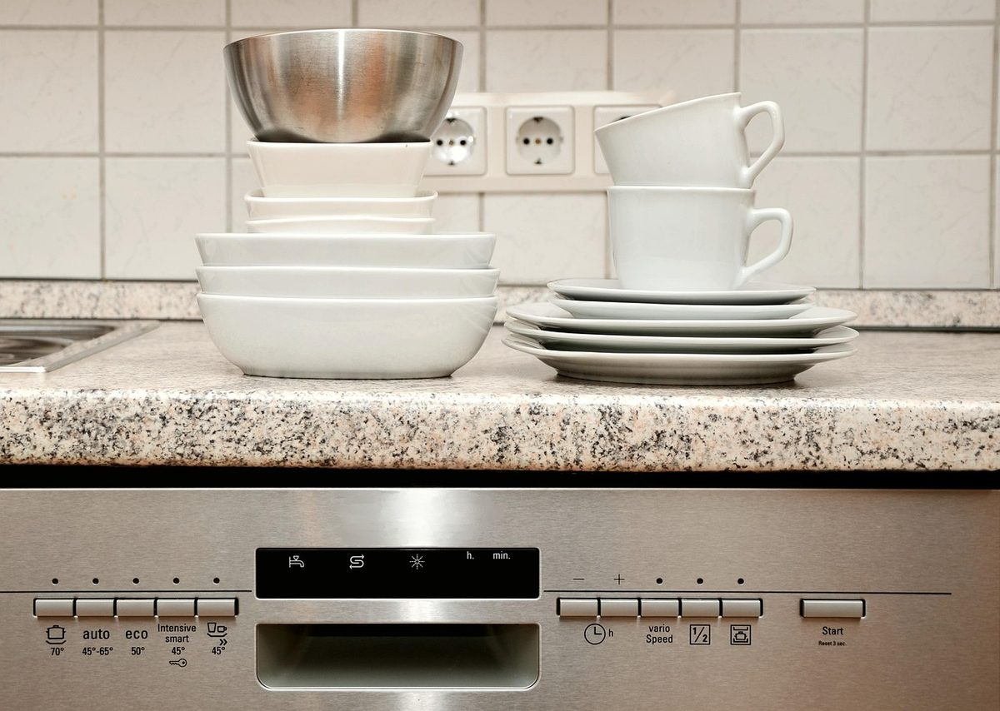

COMFEE' 18-Inch Built-In Dishwasher for Small Kitchens
A slim built-in dishwasher that fits the 18-inch openings common in apartments and small kitchens, with room for 8 place settings.

COMFEE' 18 Inch Built-in Dishwasher (model CDF18A2BST)
- 18-inch-wide built-in design with 8 place settings
- 6 wash cycles: Heavy, Normal, Eco, Delicate, Quick and Rinse
- Heated Dry, Hi-Temp and Sanitize functions
- Stainless steel tub, Energy Star and NSF certified
- Rated at 52 dB
Check Amazon for the current price, availability and delivery options.
Paid link · As an Amazon Associate I earn from qualifying purchases.Why an 18-inch dishwasher
Most full-size dishwashers are 24 inches wide. Many apartments, condos and smaller kitchens only have an 18-inch opening, or room for nothing at all. An 18-inch model gives up some capacity (8 place settings here, compared with about 12 to 14 in a standard model), but it fits where a full-size machine won't. It's usually plenty for one or two people, or for a household that runs it every day.
What it offers
Room for larger dishes
The upper rack adjusts by up to 1.97 inches to clear deeper pots, and the lower rack takes plates and platters up to 13.78 inches tall. It comes with a cutlery basket.
Cycles for different loads
Six wash cycles (Heavy, Normal, Eco, Delicate, Quick and Rinse) cover everything from baked-on pans to glassware. COMFEE' lists a 1-hour quick wash and a delay timer among its features.
Heated dry and hotter washes
Heated Dry is meant to leave dishes ready for the cabinet without towel drying. COMFEE' says it works on all cycles except Rapid and Self-Clean. The Hi-Temp option raises water temperature to as high as 136°F (58°C), which the listing suggests for heavily soiled dishes, baby bottles and children's dinnerware.
Quiet rating and certifications
The dishwasher is rated at 52 dB and is Energy Star and NSF certified. The tub is stainless steel, and the controls are push buttons with an LED display.
Measure before you buy
Listed dimensions: 17.6 inches wide × 22.6 inches deep × 32.4 inches high, with adjustable legs. It weighs 54.7 pounds and runs on 120 volts.
- Opening width: check that your cabinet opening is a standard 18 inches wide.
- Height: measure from the floor to the underside of the countertop, and compare it with the 32.4-inch height and the leg adjustment range in the installation guide.
- Depth: allow for the 22.6-inch depth plus the door and any hoses behind it.
- Hookups: a built-in dishwasher needs a hot-water supply, a drain connection and a 120-volt power source near the opening. Check the manufacturer's installation instructions for exact requirements, and use a qualified installer if you aren't sure.
- Renting? Ask your landlord before installing a built-in appliance.
Who it suits
It's a good fit for apartments, condos, small kitchens and kitchen remodels where an 18-inch opening is all you have, and for small households that want a dishwasher without giving up a 24-inch cabinet. If you regularly wash dishes for a family of four or more, a 24-inch model with 12 or more place settings may suit you better.
Frequently asked questions
How many dishes does it hold?
It's rated for 8 place settings. The lower rack fits plates up to 13.78 inches tall, and the upper rack adjusts up to 1.97 inches for deeper cookware.
Will it fit a standard dishwasher opening?
It's made for 18-inch openings, not the 24-inch openings most full-size dishwashers use. The listed width is 17.6 inches.
What wash cycles does it have?
Heavy, Normal, Eco, Delicate, Quick and Rinse, plus Heated Dry, Hi-Temp and Sanitize functions.
Can I use regular dish soap in it?
No. COMFEE' says to use only dishwasher detergent, because regular liquid dish soap will cause problems in the machine.
Does it come with a warranty?
The listing shows a 1-year manufacturer warranty. Check the Amazon listing for current warranty and return details.
Ready to check it out?
Amazon shows the current price, availability, delivery options and color choices for the COMFEE' 18-inch built-in dishwasher.
View it on Amazon → Paid link · As an Amazon Associate I earn from qualifying purchases.